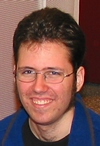
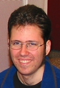

|
 | John | Stefan | Tom | Joe | Ben | Daniel |
|
 | John | Stefan | Tom | Joe | Ben | Daniel |
We're six coders who met on TopCoder (check it out). Including coders in Germany, the United States, Australia, and Texas allowed us to work around the clock.
At the start of the contest, one of us quickly (really, shockingly quickly) got a simulator up and running. It was this simulator that was to become the basis of all of our code. While this was being written the rest of us (who were up and online) studied and thought about the problem.
We observed that the 16-bit arithmetic was in fact quite precise, sufficiently precise that we felt a good division of the problem was to write one program to find a good continuous solution, and another program to turn that continuous solution into a discrete solution. Yet a third effort would be to do microoptimizations on a discrete solution (that is, try to improve an existing solution by making mostly local modifications).
In addition to these efforts, we wanted some good visualization of the traces including a graph of velocity, acceleration and braking, and requested turns. We also wanted a trace management process, where as we generated traces for the various tracks, we could check them in and they would be automatically verified by the simulator, ranked against each other, and the current status web page updated. One of the advantages of having such a large team is that we were able to pursue such parallel efforts.
a.r.a.r.a.r.a.r.a.r.a.r.Here we are alternately accelerating and turning right, so we are accelerating about 50% of the time and turning right about 50% of the time. We could also for instance
ar.a.ar.a.ar.a.where we are accelerating 100% of the time and turning right 50% of the time.
We felt that using long linear subsequences allowed us to reduce the search space significantly, while still permitting us to find near-optimal solutions.
Indeed, we can generalize such linear subsequences in two dimensions by allowing any arbitrary fraction of acceleration/braking or turning. The lower two quadrants look like triangles because you cannot brake and turn in the same move. We observed that any optimal solution almost certainly consisted of linear subsequences that were on the border of the five-sided figure. If the sequence were not on the border, it could be split into two shorter sequences that followed the same path, pretty much exactly, but in less time. Thus, the a.r.a.r.a.r... example above would never occur in a real optimal trace.
The simple case is if the path is a simple straight line. Any straight line (with a specific entrance and exit velocity) is best traversed by maximally accelerating and then maximally braking. That is, there should never be a sequence of just "rolling". For a curve, the same is true; for any particular turning radius, there's a maximum speed at which the car can maintain that path. The optimal path accelerates as close to that speed as it can, and then brakes as much as it needs to at the end to meet the required exit velocity.
Thus, when deciding what linear subsequences to consider, we never need to consider (for instance) 50% acceleration and 50% turning. This reduced the set of paths to consider by an entire dimension.
 Beyond this, our search for globally optimal continuous
solutions stumbled. We were able to get to the point
that we could calculate the maximum traversal speed of any path
described by arcs of a circle, portions of spirals generated by linear
subsequences, and lines very very quickly,
but were unable to put this into an optimization framework
in time.
Beyond this, our search for globally optimal continuous
solutions stumbled. We were able to get to the point
that we could calculate the maximum traversal speed of any path
described by arcs of a circle, portions of spirals generated by linear
subsequences, and lines very very quickly,
but were unable to put this into an optimization framework
in time.
Meanwhile, work was progressing on our discrete optimizer and on our microoptimizer. For various reasons, the microoptimizer was not generating very good traces, and neither was the discrete optimizer (although we were getting some traces).
Then, all of the sudden, the discrete optimizer started generating (what looked like to us at the time) very reasonable traces. The discrete optimizer worked by maintaining a set of current candidate solutions, advancing them by different sets of ten moves (all subsequences on the envelope), culling the now much larger set into a smaller set, and repeating until we had a solution. Much work went into tuning this algorithm, and we scurried around to find machines to run it on.
While those traces were being run (very late in the contest), one of us came up with the idea of taking the result we had found so far, and eliminating all portions of the map that were more than some number of pixels away from that path, and rerunning the discrete optimization on this new, constrained map. This improved our results even more.
Very late in the contest, really kind of embarrassingly late, we realized how much the simulator (which formed the heart of our discrete optimizer) could be sped up by replacing most of the calculations by simple table lookups. This change was too late to have an impact on our results, and that's too bad because it could have increased our effective computational power significantly.
In the end, we submitted what we felt were a very nice set of traces. We are not sharing these traces at this point in time because we do not want to ruin the suspense of the contest, although we are quite certain we did not place.
{kind=link}
{kind=link}